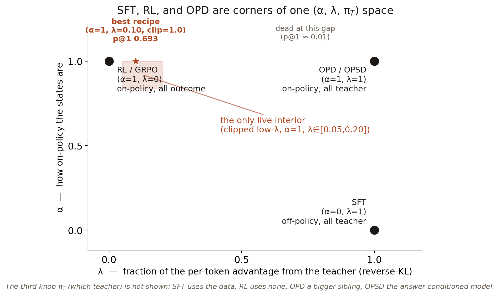
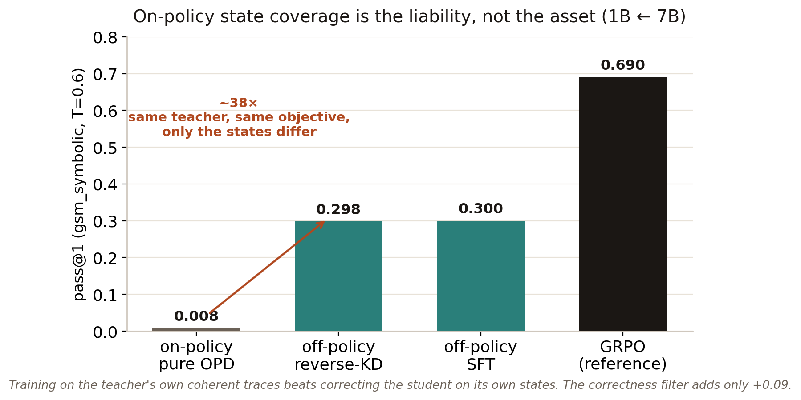
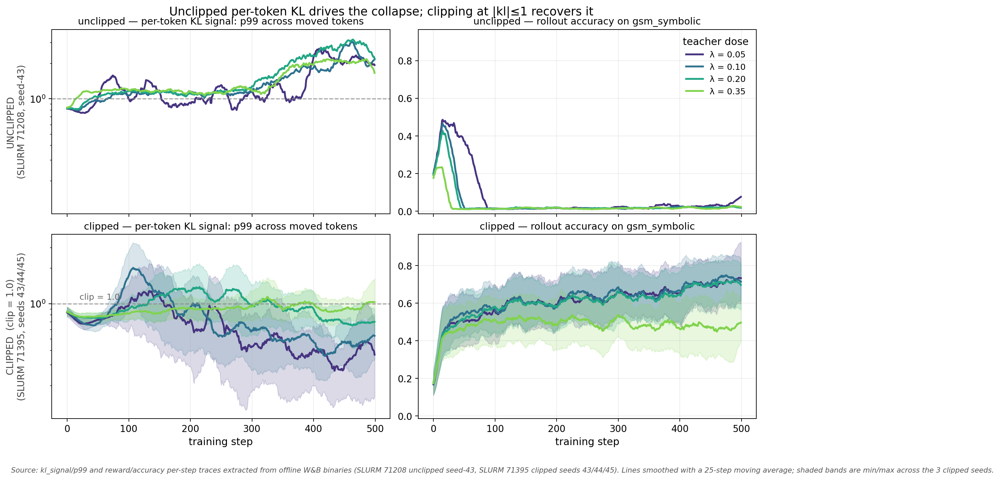
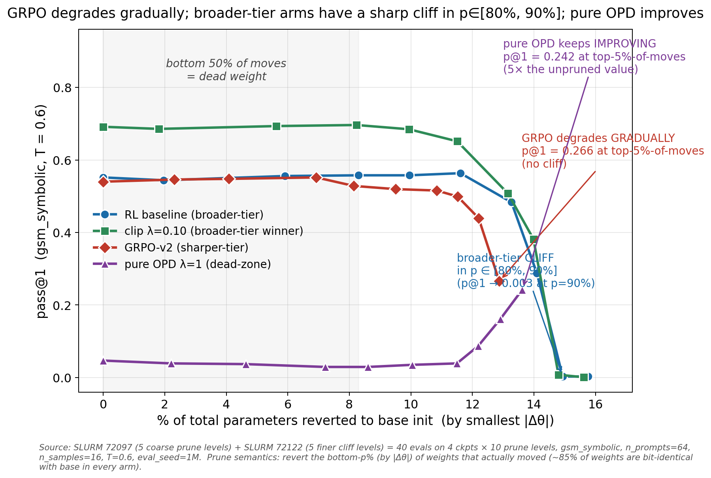
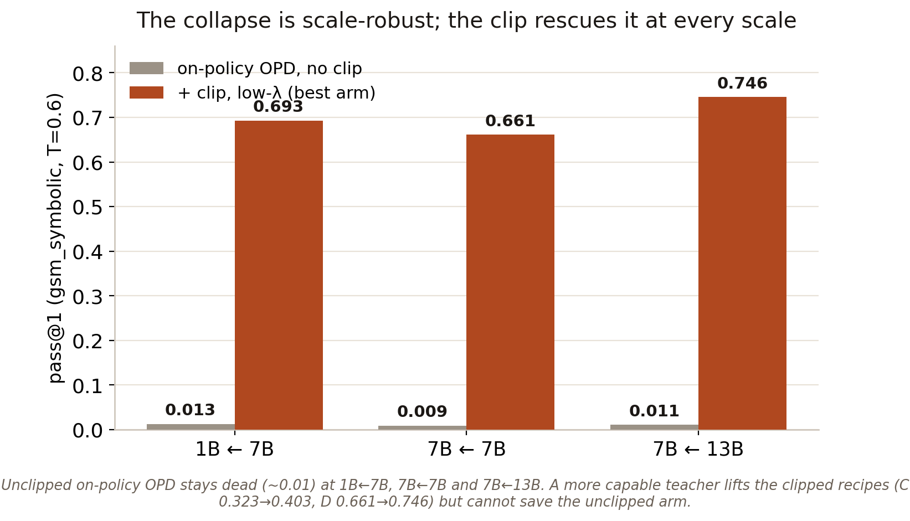
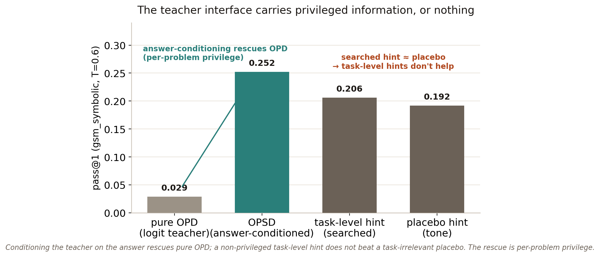

On-Policy Distillation Through a Distributional Lens
SFT, RL, and on-policy distillation are not three recipes. They are three corners of one space. I built the trainer that reaches the interior, ran eight experiments, and found the single scalar that separates a recipe that works from one that quietly collapses.
There are three ways to learn to cook. You can read a cookbook: every page is correct, but none of it is about the dish you just burned. You can cook and taste only the finished plate, honest but one bit of feedback for an hour of work. Or you can cook while a chef tastes every bite as you go. That last one, dense feedback on the states you actually visit, is on-policy distillation (OPD), and on paper it looks like the best of both worlds. That is exactly why it is worth taking apart.
This work follows the framing in Thinking Machines' “On-Policy Distillation” [1] and the companion distributional-lens note: supervised fine-tuning (SFT), reinforcement learning (RL), and OPD are all the same token-level policy gradient with the knobs set differently. I took that literally, built one trainer that can reach every setting through a single code path, and used it to map the space at a 1B-student / 7B-teacher skill gap (then scaled the key finding to 7B←7B and 7B←13B). The short version: at a large skill gap, a chef correcting every bite of a dish you were never going to plate is worse than re-reading the cookbook, and one blunt rule about how loudly the chef is allowed to shout is what keeps the whole thing from collapsing.
One knob set, not three recipes
SFT, RL, OPD, and OPSD are four corners of one (α, λ, πT) trainer, not four algorithms.
Write the update as a single per-token policy gradient with three knobs:
- α: how on-policy the data is.
α=1samples from the current student;α=0uses a fixed/off-policy buffer. - λ: how much of each token's advantage is the teacher reverse-KL term
log π_T − log π_θversus the sequence-level outcome reward. - π_T: which teacher. A dataset (→ SFT), none (→ RL), a bigger same-family checkpoint (→ OPD), or the model conditioned on the answer (→ OPSD).
The corners fall out immediately: (α=0, λ=1, π_T=data) is SFT; (α=1, λ=0) is outcome RL (GRPO and friends); (α=1, λ=1, π_T=bigger sibling) is OPD. Everything at 0<λ<1 is interior nobody had mapped. I used the OLMo-2 family [2] precisely because AllenAI shipped the intermediate post-training checkpoints, so I get same-base 7B teachers that differ only in recipe (SFT, +DPO, +RLVR), with one shared tokenizer. The task is gsm_symbolic (GSM8K-style math with a clean verifier), plus simple_equations as a never-trained cross-task probe.

(α=1, λ=0.10, clip=1.0).The teacher's recipe is not the variable
Same-base SFT, DPO, and Instruct teachers all drive vanilla OPD to ≈1%. Teacher recipe is off the critical path.
The first experiment was the one I expected to be the headline: does an RL-trained teacher distill better than an SFT-only teacher? At this gap, the answer is that it barely matters, because all of them fail. Same-base SFT, DPO, and Instruct 7B teachers each drive vanilla OPD (λ=1) to a held-out pass@1 of about 0.01, while plain GRPO on the same student reaches ~0.69. Teacher novelty is off the critical path. Something more basic is wrong with vanilla on-policy distillation here.
On-policy coverage isn't load-bearing, and the central claim reverses
With teacher and objective held fixed, training off-policy on the teacher's traces beats on-policy OPD ~38×.
The post's strongest intuition is that on-policy data matters because it trains on student-visited states instead of fixed teacher traces. So I isolated exactly that. Hold the teacher fixed (7B-Instruct) and the objective fixed (reverse-KL), and change only where the loss lands:
| arm | states | objective | pass@1 |
|---|---|---|---|
| on-policy pure OPD | student-sampled | reverse-KL | 0.008 |
| off-policy reverse-KD | teacher traces | reverse-KL | 0.298 |
| off-policy SFT | teacher traces | cross-entropy | 0.297–0.388 |

Training on the teacher's own coherent traces beats correcting the student on its own states by roughly 38–72×, holding teacher and KL direction fixed. A correctness filter on the off-policy data adds only +0.09; it is not the driver. And warm-starting from a competent student (pass@1 0.383, whose on-policy rollouts are already 50% correct) does not save on-policy OPD either; it collapses that init back to 0.003. So this is not a cold-start or initial-coherence problem. It is a dynamical instability of the on-policy reverse-KL signal itself: when the student's trajectories never reach answer-shaped regions, a dense per-token teacher signal on those lost trajectories actively destroys the model. At a large skill gap, the post's headline inverts.
One scalar separates collapse from the best recipe
A single per-token KL clip turns the collapse into the study's best recipe.
Why does the dense teacher term detonate? Look at the per-token KL push. Unclipped, the 99th-percentile per-token KL climbs steadily over training, and right as it crosses ~2 the rollout accuracy falls off a cliff around step 100–150. Bound that tail with a single hard clip at |kl| ≤ 1 and the collapse turns into a recovery.

|kl|≤1 (bottom), the tail stays bounded and accuracy recovers to ~0.7. Same teacher, same λ, one scalar of difference.That single scalar, per_token_kl_clip=1.0, is not an ad-hoc trick. It is a structural stabilizer: without it the low-λ interior is bimodal and seed-fragile; with it the seeds collapse into a tight band that matches GRPO. With the clip in place, the best recipe in the entire study is the clipped low-λ interior, (α=1, λ=0.10, clip=1.0): dense, on-policy, and outcome-aligned. It edges GRPO in-distribution (pass@1 0.693 vs 0.687, 4-seed means) and dominates it at high pass@k off-task. Crucially, you cannot replace the blunt clip with a cleverer importance reweight: a mass-preserving reweight concentrates the very tail the clip exists to bound, and collapses harder.
Update geometry tracks the loss, not the teacher
Every on-policy trainer writes a sparse, RL-shaped update; the teacher's recipe doesn't change the geometry.
A tempting story is that OPD inherits its update geometry from the teacher's recipe: distill from an SFT teacher and you get an SFT-shaped (dense) update. That is false here. Every α=1 trainer writes an RL-shaped sparse update regardless of teacher dose; SFT-from-rollouts is the sparsest of all. What varies is which subnetwork the update lives in, not whether it is sparse. The cleanest tell is what happens when you prune the smallest weight changes and revert them to base:

Pure OPD is broad and rank-additive at attention, but mistargeted: reverting its smallest changes makes it better. The geometry tracks how many forces the trainer is balancing (the loss structure), not the teacher's identity.
The collapse is scale-robust; the gap is not
The collapse reproduces from 1B←7B to 7B←13B; the clip rescues it at every scale.
Every result above is 1B←7B, so the obvious objection is scale. I ran the key contrast natively at 7B (student) ← 7B-Instruct (teacher), and again at 7B ← 13B-Instruct. The unclipped on-policy collapse reproduces at every scale (pass@1 ~0.01 at 1B←7B, 7B←7B, and 7B←13B), with a delayed, more oscillatory onset, but the same dead zone. What scale changes is who wins, not what collapses: the clip alone now rescues pure on-policy OPD (0.009 → 0.32–0.40), the gap between on- and off-policy shrinks from ~40× to ~1.3×, and a more capable 13B teacher lifts the stable clipped recipes (the low-λ arm reaches 0.746, the best of any run) while leaving the unstable unclipped arm dead. Teacher capability pays off only once the clip stabilizes the signal. “On-policy is a liability” turns out to be a small-student / large-gap artifact, conditional on the clip.

The teacher interface carries privileged information, or nothing
Answer-conditioning rescues OPD; a non-privileged task-level hint does not beat a placebo.
If vanilla OPD is dead, what does rescue it from the teacher side? Conditioning the teacher on the ground-truth answer (OPSD) works: it moves the teacher's distribution onto reachable, answer-shaped states and lifts pure OPD from 0.029 to 0.252. But that is per-problem privileged information: the teacher sees the label. So I asked whether a cheaper, non-privileged stand-in works: a single fixed, task-level hint (the same string for every problem), found by a GEPA-style search [3] that rewards making the teacher correct without inflating the KL tail. It does not. The searched, task-relevant hint (0.206) does not beat a task-irrelevant placebo tone hint (0.192). Whatever a fixed string buys comes from appending any string, not from the string being relevant. The OPSD rescue is per-problem privilege, and task-level hint engineering is a dead end at λ=1.

The frontier
Dense, on-policy, and outcome-aligned supervision, with no privileged crutch, is still open.
One sentence holds the whole study together. The interesting question is no longer “OPD versus RL.” It is: how do you get dense, on-policy, and outcome-aligned supervision without collapsing to brittle local imitation? The clipped low-λ blend approximates the answer by importing unbiasedness from the outcome branch. OPSD approximates it by spending unbiasedness on privileged information. A self-referential importance reweight failed to reach it natively. The frontier object (a teacher that is itself dense and itself reward-correlated, with no privileged crutch) is still open. The most promising next probe is a separately-trained step-level process reward model [4] as the teacher (the scaffolding is in the repo).
The five things I'd carry forward. (1) Teacher recipe is not the variable. (2) On-policy coverage is not load-bearing at a large gap; it can be a liability. (3) A single per-token KL clip is a structural stabilizer, and the clipped low-λ interior is the best recipe. (4) Update geometry tracks the loss, not the teacher. (5) The collapse is scale-robust; what the teacher interface really buys is privileged, per-problem information.
Code and full writeup
Trainer, configs, measured outputs, figures, and the full writeup, in one repo.
The unified trainer, every config and SLURM launcher, the measured JSONs behind every number, the figures, and the ~200-page RESULTS.md are all in one self-contained repository:
Replicates and extends the distributional-lens framing of SFT, RL, and on-policy distillation; writeup format after Thinking Machines, “On-Policy Distillation.” The vendored RL/PG reference is by Zafir Stojanovski (Apache-2.0).
References
- Thinking Machines Lab. “On-Policy Distillation.” 2026. thinkingmachines.ai/blog/on-policy-distillation
- OLMo Team, Allen Institute for AI. “OLMo 2.” 2024–2025. allenai.org/olmo
- Agrawal et al. “GEPA: Reflective Prompt Evolution Can Outperform Reinforcement Learning.” 2025. arXiv:2507.19457
- Lightman et al. “Let's Verify Step by Step.” 2023. arXiv:2305.20050
- Agarwal et al. “On-Policy Distillation of Language Models (GKD).” 2023. arXiv:2306.13649
- Ibra Niang. “On-Policy Distillation Through a Distributional Lens” (code & full writeup). 2026. github.com/ibusnowden/opd